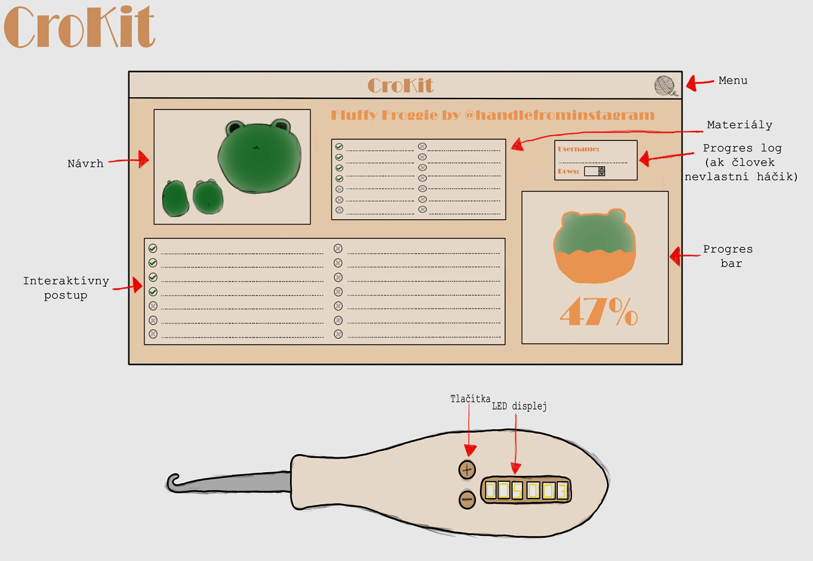

Frederika Kmeťová
23 rokov | VUT | Brno
Môj rozvoj
2020
Prvé pesničky nahrané na SoundCloud
2021
Prvé kusy custom oblečenia na objednávku

2022
Ďalšie kusy custom oblečenia a doplnkov

2023
Tvorba vlastných doplnkov aj na objednávku

2024
Prvé návrhy na vysnený e-shop a produkt

Návrat ku kamere a foteniu školských akcií